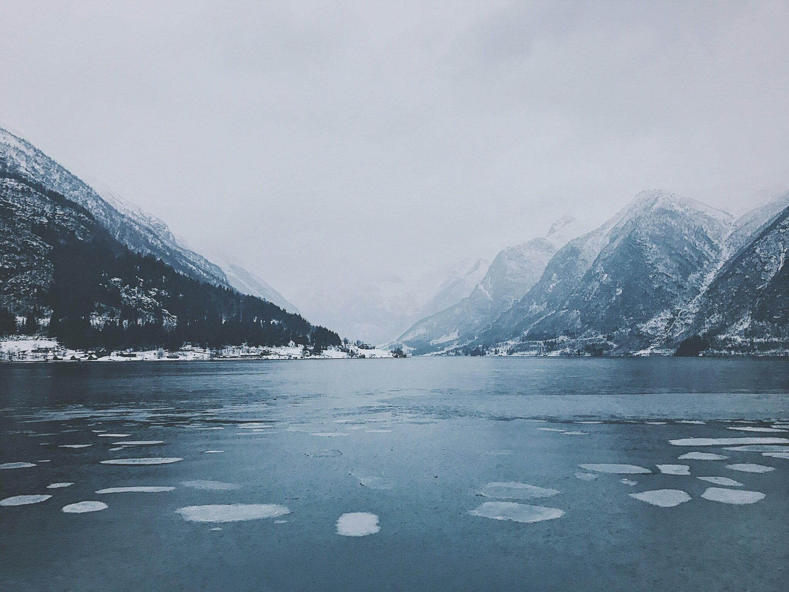
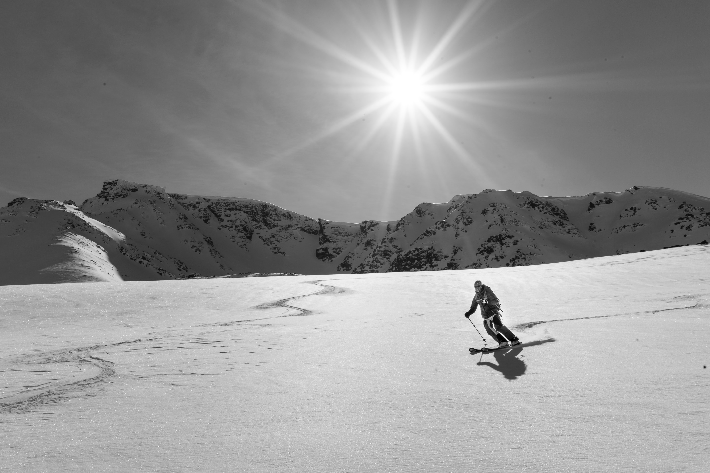

Why Norway wins so much in Winter Olympics?
Secrets to Norway's success
Sun Nov 08 2020
Here is Norway
A tiny northern country, known for snow, glacier and aurora.
At the same time, Norway is the biggest winner in the Winter Olympics
It accumulates over 450 medals and is ranked as the 3rd.
Check out the chart for reference!
Tooltips will show up after 2 seconds of hovering.
Medal counts for Winter Olympics from 1924 to 2014
ℹ️ 👩🏻‍💻
Please hover over color blocks to check the medal count for each medal.
While it only sent 570 athletes from 2006 to 2014
It’s only 1/2 of America’s Olympic workforce!
Ranking of athlete counts by country from 2006 to 2014
When it comes to individual achievement
Norwegian athletes are the most decorated Olympians!
Medals per athlete among the top 3 medal-winning countries: Norway, USA and Canada
These are athletes who have won more than 3 medals.
Let’s have a closer look at who they are
Medals per athlete among the top 3 medal-winning countries: Norway, USA and Canada
display by name
ℹ️ 👩🏻‍💻
Please scroll to zoom in or out, or drag for panning.
Even compared internationally
Norway is still top ranked.
Let’s see the top 15 medal-winning athletes in Winter Olympics.
Click to see the top 15 awarded athletes, how many top 3 countries are in the list.

But why?
What’s special about Norway?
The following are some potential reasons for Norway’s success in Winter Olympics.
Reason No. 1
Norway is rich, but with equality.
which means everyone in the country has a fair share of resources.
With the resources, this also means they can have more time and training for sport.
Everyone has about 74K US Dollars, ranked at the 3rd in the world.
GDP per Capita in US Dollars
ℹ️ 👩🏻‍💻
Please scroll to zoom in or out. Filter ranking by sliders.
Reason No. 2
Norway has efficient healthcare system.
to efficiently keep its people healthy.
This means that the budget they spend on healthcare is helping improve the life expectancy in Norway.
Now play with the chart to see the top ranked countries.
Healthcare Efficiency from 55 countries
The listed countries are nationa with popullation of at least 5 million, GDP per capita of at least $5000 US Dollars and life expectancy of at least 70 years of age.
ℹ️ 👩🏻‍💻
Please scroll to zoom in or out. Filter ranking by sliders.

Reason No. 3
Norway values childhood development.
Sport is for fun.
They don’t have child athletes as many other countries do.
The average age of Norwaegian athletes in Olympics is less than 27.
It’s ranked as the 14th oldest country among the 228 countries.
Average age of athletes by country
ℹ️ 👩🏻‍💻
Please scroll to zoom in or out. Filter ranking by sliders.
Reason No. 4
Norwegian are one of the happiest countries in the world.
It’s calculated based on GDP per capita, social support, healthy life expectancy, freedom of choice, generosity and perception of curroption.
Happiness ranking

Thank you for watching.
Email me at hsinyuy@umich.edu for more conversation!